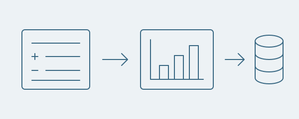

Projetos
Trabalhos selecionados em automação de dados, análise aplicada e pesquisa estatística.

Automação de dados
Promoções para marketplaces
Cruza planilhas de produtos com bases de preços e exporta os valores das promoções por marketplace.
- Python
- Pandas
- Streamlit
- OpenPyXL
Detalhes do projeto
- Importa Excel ou CSV e identifica colunas de SKU / ID.
- Permite conferir produtos encontrados e não encontrados antes de exportar.
- Trata valores inválidos de fórmulas e exporta apenas identificadores e preços finais.

Iniciação científica · Em andamento
Florestas Aleatórias e grafos
Código de pesquisa para análise de dados genômicos, importância de variáveis e aprendizado de grafos com seleção de estabilidade.
- Python
- scikit-learn
- NumPy
- NetworkX
Detalhes do projeto
- Integra marcadores genéticos e variáveis fenotípicas para análise estatística.
- Estuda importância de variáveis por Florestas Aleatórias, reamostragem e avaliação de estabilidade.
- Constrói representações de dependências em grafos; os dados genômicos brutos não estão no repositório.

Análise aplicada de dados
Análise de produtos do Mercado Livre
Reúne informações de anúncios, compara produtos e estima valores líquidos com as premissas de tarifas da aplicação.
- Python
- Streamlit
- BeautifulSoup
- ReportLab
Detalhes do projeto
- Extrai títulos e preços de anúncios do Mercado Livre.
- Combina os dados dos produtos com alíquotas e comissões informadas pelo usuário.
- Organiza vários produtos e exporta um relatório da análise em PDF.

Finanças pessoais
Controle financeiro pessoal
Organiza receitas, despesas e contas recorrentes com painéis interativos e banco de dados Turso.
- Python
- Streamlit
- Pandas
- Plotly
- Turso
Detalhes do projeto
- Registra e edita receitas e despesas por categoria e situação de pagamento.
- Exibe resumos mensais, distribuição de gastos e evolução histórica em gráficos com Plotly.
- Projeta contas recorrentes futuras e organiza tarefas e rotinas pessoais.